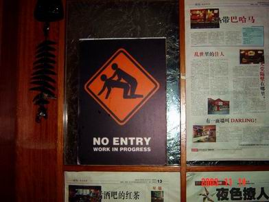

Archives : 2003-11
木子美砸碎你吸引人的假面 @ Nov 24, 2003
早先，有人在MSN上问我有没有看过木子美的小说 ，说这个女子写的网络小说如何了得。后来听朋友描述这个女子的故事：一个和女友恋爱三年的男人追求她，糟糕的是她爱上了这个男人，之后当木子美将怀孕的消息告诉这个男人时，他却说：“玩不起就别玩......”接着他不再接木子美打给他的电话，就那么消失了！木子美这才明白原来从始至终不过是玩儿？愤怒的木子美将这一切告诉了他的女友......论到无耻，究竟哪一个更无耻？其实这种男人还挺多的，让别人上了一次当，也算给别人的人生上了刻骨铭心的一课。
但凡作家都有自恋倾向，理想化且自尊的女人心灵受到伤害后她的反应必定是激烈且随之扭曲的。或许这会是一种偏执！我认为这那段经历使她受到刺激，没有人愿意当众脱光了衣服行走，不是吗？她的文字是对人性、人心、人面的不屑与嘲笑，至少她有勇气砸碎了大家那些华丽的假面。
事实上我并不愿去读这样的文字，至今没有看过。因为害怕受到那么惨烈的影响，一个人若不能学着自我解脱，那他/她必定长久处于一种边缘状态。不是什么人能随意进入我们内心最柔软的部分，我们要保护好自己的心态。引用贺奕《身体上的国境线》中的一段话：爱情是发现自我的一段旅程。人都是不同的，有人找到了百合，有人找到了罂粟。
因为没看过她写的小说，不便发表更多的感想，这里转载一些对于木子美的评论和感想：

—《可以做不可以说》来自乌鸦嘴
找到她那轰动的性爱日志，没有看完。根本不觉得惊讶。BLOG本来就是个人的宣泄，在一个目前还不能做到想什么说什么的国度，有人出位容易会被人看成社会的大转变。其实事实早就发生和开始泛滥了。
当然东方的传统是有些事可以做不能说的。
可惜不能流畅的阅读英文BLOG，那里什么都有，木子美——小儿科了。
~~-《谁被“木子美”耍了》
“谁说我没有爱情，我天天写遗书”
“我一直在玩一种极端的游戏”~~
-《木子美文字中的痛苦》作者: 大胡子艺术家
我一边在听黑豹的《绿色劫难》，一边在看木子美的一些东西。。。此刻，《绿色劫难》的情感与“嵌体运动”中的情绪对于我是相吻合的。人一定是在一种和感动类似或相关的情感下，才有欲泪的感觉的。
看着木子美的文字，我感受到一种实实在在的痛苦。也许是我从中看到了痛苦；也许是我看时，我自己在痛苦；也许是我认为木子美在痛苦——尽管木子美也许很快乐，就在她的性中，在她无以伦比的性技、口技与手技中。但我想，一个正常人，应该不会在纯肉体中找寻精神的慰藉。尤其是一个正常的有点文化的人或所谓文化人。
我曾经有过痛苦的时期，在那一段时期内的有一星期里，我企图通过吃来摆脱一切。每天我就到处跑，找朋友，找酒肉。我用了一个不知那儿的方言，吃叫做“shua”（声调为第一声，但要把尾部去掉一点，以使调值不足）。我就这样shua来shua去，很快就发现，不仅已无处可shua，而且shua得没胃口，于痛苦也无济于事。这是用食来解决问题，和用性来解决问题，本质是一样的。如果当时我用性来摆脱生之痛苦，那么我就是木子美，最多名字改称为“木子美男”。之所以没有这样，因为一我没钱，二我是男的（女人勾引男人，很容易，也不犯法，至多落个“浪”的名声；男人要想把女人弄上床，非要机关算尽，手段使尽，心思用尽，精神耗尽才行，否则就是强暴，严打时要杀头），三是我还没有拉下脸来。遇到痛苦，有的人去逛街购物，大把花钱；有的人暴饮暴食，大量吞噬；有的人大口喝酒，大发酒疯；还有的人就疯狂做爱，大发淫威，大发花痴，简直一个色情狂。那时，我条件太差，购物没钱，吃多了反胃，喝醉了呕出胆汗一嘴的苦，想搞搞“嵌体运动”也没人乐意配合，只好弄支苦烟抽抽。
所以，我在木子美的文字里感受到了痛苦，不管这痛苦是她的，还是我的，总之是有的。而痛苦，是容易让人流泪或欲泪的——所以（哎，又所以了），我在看木子美的文字时，想流泪。
有的人在木子美的文字里看到了性与性技巧；有的人在木子美的文字里看到了女人的好色与有机可趁；有的人在木子美的文字里看到了性的美或丑恶。而我在木子美的文字里看到了痛苦。不管怎样，至少对于我，木子美的文字还是有意义的，至少比“亩产n万斤”要有意义。
 ~~-《可以不说木子美了吗》作者: 水柚~~
~~-《可以不说木子美了吗》作者: 水柚~~
最看不得有人比木子美兴奋，认为国内开放直追纽约。在少数的采访中，木子美主动被动地，都要与《欲望都市》的凯莉比较。这年头，能写字，敢讲性经历的女人，个个喜欢自比凯莉。她们也许应该回去重新看看这套著名的连续剧，看清与凯莉的真正差距，不说文字水平了，起码，人家是真心投入爱情的。木子美的态度，怎么看，倒更像是那个随便的萨曼沙。在最后一季的《欲望都市》里，编剧让三个相信爱情的女人找到了归宿，而无爱却有无数性的萨曼沙最终因此得了绝症。
-《木子美:“要采访我，必须先和我上床；在床上能用多长时间，我就给你多长时间的采访”》作者: 我是一只鱼……
木子美在《遗情书》中记录了其与广州一位著名摇滚乐手的“一夜情”故事。故事以白描的手法，将她与该著名乐人的性爱事件的大量细节再现在看客眼前，令人吃惊的是，这一次，她在日记中直呼该乐手的真实姓名，并对其性技巧和能力进行了描述。
正是这篇日记，在网上掀起了轩然大波，使木子美“一炮而红”！
这篇日记被迅速转贴到各大网站，又在网民间四处流传。在音乐界、传媒界及网络上引起极大反响。据悉，后来躲到成都的该著名乐人在接受当地媒体采访时大为光火，称完全未料到与自己一夜情的对象居然是个喜欢“自爆性事”的女编辑。
迫于压力，木子美曾一度关闭《遗情书》 ，不少日记也被迫删除。同时，她曾在广州某小资杂志上开设的专栏也被取消了。但过去的日记不见了，新的日记又源源不断地从她的笔下流出。
~~-《我爱木子美》作者: 看谁文章写得好~~
我爱木子美/张别离
爱过三毛、邓丽君、戴安娜，也爱过张爱玲，现在来爱木子美。
象“你说这个城市很脏，我觉得你挺有思想”般来爱她；
象“你并不美丽/但是你可爱至极”般来爱她；
爱她的“爱是做出来的，忽然觉得。”
爱她的“靠，都三点了，洗洗睡吧。”
也爱她的“你在我眼前时，我会是一束璀璨的烟花，只开放到你从我眼前消失。”
不在木子美的床上，就在木子美的身上。这是前两天在老马家吃饭时，蒋明拟的广告语，他说他要生产木子美牌床垫。
这一次你跑不了了，也是广告语。同座的高人要生产木子美牌安全套。
很高兴看到这么多人关注木子美，我代表伟哥深表谢意，还是广告，是在听奥美的声音时想的。
听说木子美不干了，被劝退了，我想说，不要理他们，因为他们都跟金庸一样老了。
又听说别人把木子美跟卫慧、九丹放在一起比，我也想说，不用理她们，因为她们拿的都是阴毛笔，而木子美用的是鹅毛笔。
不要去理会所谓专家的评论，因为他们都跟北大一样，只有研究哈母雷特的，而没有莎士比亚。
也不要去理会媒体铺天盖地的宣传，因为干卿底事？更何况现在的很多媒体不叫媒体，而叫煤球。
去年曾写过一点东西，可没人敢发，里面提到：在广州，一夜情夜夜在发生，他和她的快乐妖艳而短暂。快乐不要太久长，太久了便不叫快乐，而叫幸福。幸福不是一个人的事，一个人不会有幸福，但一个人可以有快乐。一夜情其实是一个人的游戏，配戏者只是玩具、道具或阳具，他她没有姓名，只有性别。
在无可发泄的年代看到木子美，是一种呼吸。
算作声援。
-《木子美十大惊世语录》作者: 独自追风
1关于婚姻
记者：你会结婚吗？
木子美：有可能，如果有人向我求婚，我看了也合适，就会结婚吧！其实也可以把结婚当作行为艺术，趁我现在有点热的时候，结个婚制造一起事件也挺好玩的。
记者：行，我把你这个消息发布出去，肯定会有人来找你的。假如结婚，婚后你会过一种什么样的生活？
木子美：各自鬼混吧。
(接受某报记者采访)
2关于防止心灵破碎
“我的态度是：荒淫无度的性行为尽量控制在物质技术能够发挥作用的层面，这是保证身体完好无缺，让你有机会后悔或继续享乐的前提；然后是心理上单纯地将性行为看成是它本身，它只是跟其他行为一样为人所需而设罢了，这是防止心灵支离破碎的途径。”(摘自《遗情书》2003-11-6所写内容)
3木子美的嚣张主张
“为什么木子美能这样嚣张：
她没有用性交换爱情、婚姻、金钱……
她没有用色相(因为她不可能)勾引任何男人……
同时她又很负责，让众人知道哪些男人跟她性交过。
她主张，女人们多给男人机会；她主张，取消妓女。”(摘自《遗情书》11月4日所写内容)
4关于长相守
“太多的起起落落，及时行欢，让我丧失了长相守的欲望。事实就是这样，你在我眼前时，我会是一束璀璨的烟花，只开放到你从我眼前消失。”
(摘自《遗情书》11月3日所写内容)
5关于频频更换性伴侣
“快乐呀，当然还可以研究男人，每个男人都有不同的内容。”(木子美接受媒体采访时语)
6关于男人
“我重视男人的本来面目，那不是修身养性养成后的东西，或是可能随他身份变化的东西。所以有时候，我觉得男人脱了衣服都差不多。”(接受《mangazine名牌》杂志采访时语)
7关于爱情
“爱是做出来的，忽然觉得。如果在性交时无比相爱，算不算也是种爱情？
比之虚无缥缈，它看得见、摸得着，享受得到……我很陶醉过程中的一切，落下的窗帘和窗外的景色虽然都很平庸，但我却能联想到《情人》那部电影，梁家辉和“小杜拉斯”也是在下午。我们，真的想做完美的爱，虽然，实质是性交而已，但正因为还没有真正的感情纠葛，使得性交更具纯粹魅力。”
(摘自《遗情书》11月3日写与一位男人性交时的内容)
8关于生活与男女关系
“不需要工作时，会看看碟，上上网，或者去一些酒吧，碰到心仪的男人，可能会跟他聊聊天，喝喝酒，然后一夜情……因为不害怕，我轻易就能爱上一个男人，轻易就能跟他上床，轻易就能从他身边离开。也因为我太轻易，男人们轻易就可以把我忘记。男女关系于我而言，就是直接地与一个男人发生性关系。”(摘自木子美专栏文章)
9关于伤害
“我时常有伤害感，但没有一把刀子插在胸口、徘徊不去的情况……我也伤害过很多人，就这样。我好像一直在玩一种极限游戏，很少和人平平淡淡地相处。”(接受媒体采访时语)
10关于自己
“我是一个很自我的女人，一个独立的，尊重自我价值、自我存在的女人。我要的是自由，时间，健康，机会。”
“我的‘正’表现在引诱男人后，有一个研究者的态度，就像以前研究妓女的人会深入到这个阶层里去……(目前)男人研究女人的书很多，女人研究男人的实际经验太少了，这是值得去做的，希望那些被我研究的男人不要生气。”
“我的‘邪’表现在我老去诱发男人的邪恶。”(接受媒体采访时语)
是真爱就不能没有悲剧倾向 @ Nov 19, 2003
 晚上7点多钟离开办公室，走出公司大厅时路两边已经亮起我最喜欢的橘色灯光。昨晚睡觉前看王小慧《我的视觉日记》，脑海中不断涌现出GRACE的形象，鼻子酸酸的。友谊和精神的依赖感令人在这个初冬清冷的夜晚更加脆弱！原来我离自己那么远，丢失已久......而面对她，能令我意识到还有理想和追求的存在。一个人怎么可能毫无压力的去享受生活？那么彻底，这让我不安！
晚上7点多钟离开办公室，走出公司大厅时路两边已经亮起我最喜欢的橘色灯光。昨晚睡觉前看王小慧《我的视觉日记》，脑海中不断涌现出GRACE的形象，鼻子酸酸的。友谊和精神的依赖感令人在这个初冬清冷的夜晚更加脆弱！原来我离自己那么远，丢失已久......而面对她，能令我意识到还有理想和追求的存在。一个人怎么可能毫无压力的去享受生活？那么彻底，这让我不安！
昨晚看到《我的视觉日记》“燃尽的蓝蜡烛”中那个德国演员安佳斯自杀，其中写到安佳斯对王小慧说过，他这一生中只碰到过三个他爱的女人，都曾让他失望，王小慧是他碰到的第四个，王小慧是让他觉得现实与想象同样美好的一个人，这种内在与外在、现实与理想统一的人他没有遇到过。这种感情，在他生命中只出现过一次，虽然他知道王小慧不能给他以回报，但王小慧帮他实现了这个梦。
王小慧想是她的拒绝造成了他的死，但王小慧不可能不拒绝他，而且王小慧以为有时候仁慈便是残酷，而残酷便是仁慈。也许王小慧太无情了，没有给他留下丝毫希望？
安佳斯曾多次说过关于死亡的话题，比如说：生命终结了，痛苦也终结了。这个世界上美好的东西太少了，但真正极致的美总是给人以悲伤，总有悲剧色彩，因为它和消逝、幻灭总是不可分的。他信奉哲学家海德格尔的论点：存在的真正根基是虚无，我们被虚无抛出，又被虚无吞没。......安佳斯说他最喜欢的台词是歌德的一句话：“要想检验谁与谁可以永恒地在一起，要看是否一颗心能找到另一颗心！”
安佳斯送给王小慧诗稿的第一页上有一封信，没有称呼，只写着：
给王小慧—有的女人看去似乎是美的，因为外表漂亮或有吸引力，罗密欧说她们的脸上有着假面的影子。也有的女人有些美好的东西，但因为这只是一部分而非整体，所以留有很大一片空白及不协调。
一个真正美的女人是在美之上，所以她才真的美。一个真正美的女人是带有着某种神秘感的、纯粹的、不可触摸的、近乎完满的东西，所有这一切以一种和谐的方式统一在一起，这些成为她的可爱与可贵之处。......她的美也决定了她的行为方式：她保持了一些孩子式的天真，又有那个人化的、深沉的内心感觉。
真正的美有那么强的特殊的魅力，只有很少的人能认识到这一层的美。只有那很久而且很深地注视过真正爱慕过你而且自己也美的人，他当然会为你着魔并在心灵上受到巨大的撞击。他只有用一个微笑来宽慰自己—带着一只含泪的眼睛—一个丑角必须当心，他不能失去那只带笑的眼睛。
最后署的日期是1987年9月19日。难道这就是他对王小慧说的最后的话吗？他曾经对王小慧讲过卓别林，一个伟大的丑角总是用一个眼睛笑而另一只眼睛流泪。
王小慧曾在电话里对安佳斯说：在我的生活中回忆和想象总是比现实更好些。安佳斯却说：我的回忆和想象与我的现实同样美好......
It comes the season of gingkgo leaves…... @ Nov 17, 2003
Sunday,
November 16,2003
Sunny

Always,I carry the color of gingkgo leaves.
At a loss on every blissful Sunday.
Today,
I choose the same color,
Starting from the right side.
I search for bliss.
On this very day,it dawns on me.
That,all along,I have been walking on the left side of bliss.
在天堂隔壁遇见猪头和水木年华 @ Nov 15, 2003
四个女孩中的老大去苏州给别人上课去了，总是有好心人提醒她第一次当老师是否会紧张颤抖的问题，于是老大把薄薄的纸张换成了沉重的文件夹拿在手中，准备带上讲台使用。对于我们三个人周末的活动她更是咬牙切齿了一番。
这个周末的天堂隔壁没有上周末人多，帅哥也少了大半，我们刚刚落座就有信差过来询问沙发上有人想与我们一起喝酒聊天，“他们是不是帅哥？年老的帅哥就算了。”信差答：“如果他们很有MONEY呢？”这答案真让人头晕，呵呵~~“我们比他们更有MONEY。”信差转身回话去了。这是什么世道？他们以为有钱就能泡妞了？？？鸽子说：“那两个男人真搓，跟猪头似的。”但凡猪头似的男人多半会先显示自己就要溢出银行帐户上的MONEY，然后描述一翻自己如何似景的前程，多半的猪头也会固执的认为钱是最有杀伤力的泡妞武器，这些猪头真是可怜的令人同情！
这个夜晚对于MAVIS最大的收获就是遇见了“水木年华”，他们和一群操着京腔穿着粗糙（那是个性）的北京男女坐在我们邻桌的位置，MAVIS马上要求他们为其签名，而我们这里还在云雾间行走，过去只听说过“水木年华”这个组合的名字，其中一个戴墨镜的家伙悄声问我：“你都听过我们哪些歌啊？”“啊~~~~~~对不起我一首都没听过，她刚毕业你去问问她吧。”为了不让对方受打击我指向MAVIS，MAVIS在相同问题下兴奋地在椅子上跳跃了一下：“哎呀，听过的太多了。”她在语气中特别强调了“太”这个字，“能说说什么歌名吗？”他们紧追不放。MAVIS楞了1/3秒：“我太激动一时想不起来了。”接下来的几秒中大家无语，MAVIS突然笑起来说：“什么XXXXX，对吗？”（我还是没记住歌名）而这个夜晚对于水木年华的最大收获就是遇见了MAVIS，在我们离开天堂隔壁之前只有MAVIS认出了他们、找他们签名，并说出了他们唱的一首歌名。之后，南京十八频道的主持人叶风也来了。


WC门口这么有创意的牌子怎么能不拍呢？

水木年华和天堂隔壁酒吧的老板
今天在网上找“水木年华”的歌听，很想告诉他们：其实你们的歌很好听。昨晚我都觉得自己够残酷！这里将他们的《中学时代》更换为茶的背景音乐。晚上去铁心桥驾校练车，最后一堂夜训课，约了7点到9点的时间。
11月11日单身节 @ Nov 11, 2003
早晨同事小吃突然在办公室说：“今天是单身节！”
“什么？诞生节？”
“不，是单身节！11月11日，四个一啊，全是光棍。”
“那和我们女的没什么关系了？！”
“女光棍啊，呵呵~~”
昨晚看《SEX AND THE CITY》第六季，CARRY对他的女友们说：“我已经很久没做爱了，我现在需要一个男人亲吻我，在我身上重重的压一下，仅此而已。”女人们指着餐厅里另一张桌子上的帅哥，对CARRY说道：“走过去，SAY HI，然后对他们中的一个人说‘请让我感受一下你的体重，好吗？’很简单，只要你走过去。”......大龄单身的苦恼？！
嗨！今天是11月11日单身节哦，找一个最爱的深爱的相爱的亲爱的人来告别单身吧！也可以和一个毫无恋爱感觉的人告别单身，如今结婚究竟为了什么？今年会是你的最后一个单身节吗？
Without You—Usher @ Nov 11, 2003
早晨依然是跑步到公司，从昨天早晨开始不再把时间浪费在等出租车上，下了公共汽车看看表还有5分钟就要迟到了，斜挎起背包开始向公司冲刺。边跑边觉得可笑，可笑自己为了什么奔跑？清凉的早晨被公车上一位小姐的口气熏得无影无踪，这时候奔跑起了作用。
刚才有人说：“昨天是光棍节，晚上想去买个汉堡然后去游泳，没想到在麦当劳里碰到了一个最慢的麦当劳小姐。”
“光棍节和麦当劳小姐度过了多少小时？”我问？
“半个小时......为了等一个巨无霸。”
快吃午饭了，请调整好呼吸用心来听这首很短的歌《Without You》—Usher

Love, such a lonely place
Nobody wants to be alone
To have the world but no one to share it with
I’m so alone
I can’t stand this feeling of being without you
Yes I’ll do
Whatever it takes to prove I trully love you
Don’t let me go
Let’s stay together, forever and ever
Can’t sleep without you by my side, help me
......
Coldplay《Parachutes》 @ Nov 10, 2003
艺人：Coldplay
专辑：Parachutes
风格：Brit-Pop，Indie Rock(英式吉他流行，独立摇滚)
发行日期：2000年7月
厂牌：Parlophone

自2000年盛夏，一首满载少年浪漫情愫的情歌《Yellow》登上英国单曲排行第4名，红遍全英大街小巷开始；随后《Parachutes(降落伞)》专辑旋即空降英国金榜冠军宝座，98年正式成军于伦敦校园的Coldplay(酷玩乐团)已平地震雷一声响地迅速在全球乐坛窜起。
《Parachutes》是Coldplay在利物浦的Parr Street Studio录音室，与曾为Gomez、Badly drawn boy作嫁的Ken Nelson共同制作。纯净、美丽的中、慢板旋律加上主唱Chris Martin神似Thom Yorke(Radiohesd主唱)轻柔却极具戏剧张力的淳美歌声，10首慢流一致浪漫、迷美情绪的歌谣。
“Shiver”是一首绚烂美丽，关于单恋的故事的歌曲，令人感到颤栗的歌曲名称；以澎湃汹涌的吉他反复乐节，加上Chrir戏剧性嗓音，简单手法表现的畅销单曲“Yellow”；年少轻狂的“Spies”，伴随着彷复来自天堂的中八度圣音；赤裸，贝斯乐声轻抚的民谣“Sparks”简单、有力的生活宣言；“Trouble”以惊人、独特的轻柔钢琴尾曲开场，紧接着Jon和谐的吉他切入，瞬间整首歌曲彷复飞了起来；专辑最后一曲“Everything’s Not Lost”结尾部分的低声吟唱，充满了轻柔爵士味，是酷玩乐团Coldplay自信展现实力的进一步证明。
聆听《Parachutes》像感受一次美丽，但又寂寞的坠落；一段远离每日烦嚣，但又可以更清楚观看的经验。
他们的音乐和团员编制一样简约洁净却散发了无限无穷无际无垠的动人情怀，犹如在空无一人的昏黄密室中独自拔弄吉他音弦般，每个声音都是如此清澈，每个音符都是如此野蛮绝情的要让自己彻底心碎、崩溃、迷失……
我们苦苦地等候着这样的声音，特别是那些曾经沉浸在Radiohead、Suede、Pulp、Blur、Oasis等British Pop优美华丽乐风的摇滚乐迷们。而Coldplay就是这个值得我们耐心期待、聆听的声音，因为他们绝对会是今年英国最佳”新进”乐团，也绝对会是让你为之”心悸”的乐团。只要你是耳尖的英伦摇滚乐迷，不难在Coldplay身上听到Radiohead深深印烙的音影。乐队的灵魂人物Chris的嗓音和Thom Yorke（Radiohead主唱）简直如出一辙，也许少了点神经质的癫狂。但他的歌声同样是如此自虐自溺自甘沉沦在颓废沮丧的情思中。
曲目：
1. Don’t Panic
2. Shiver
3. Spies
4. Sparks
5. Yellow
6. Trouble
7. Parachutes
8. High Speed
9. We Never Change
10. Everything’s Not Lost
有表情的手 @ Nov 10, 2003
—就在刚才我的右手大拇哥褪下了重重的棉衣，伤口上结了一个难看的枷。今年我也好几次与人打架来着，如今社会上讲究的是暗箭伤人，等我学会使用弓箭就不用打架了。转载此文以纪念今天。

文：由叶
我有个学跳舞的同事，不得志，趁早改行学了外语当了翻译。却落下了个习惯，爱坐在办公室里用手比画来比画去，自恋之后问我：我的手有没有表情？
有表情的手？很诗意吧？对我的同事来说是很失意。
现在这个同事已不知所踪，我却落下了看手的习惯。
看女友的照片，一组是她很幸福地躺在大石头上，河流山野，甜蜜诱惑，可是每张都是拳头紧握，怎么了？原来当时她暗恋上了摄影师，表情放肆，内心紧张，好象手一摊开，秘密就被泄露。
电影《锯刀锋》里说，“锯刀锋”就是爱到忘情时，手指在爱人背上留下的一道道指印。看完电影，我拿了自己的手问：爱到忘情时你在干什么？
有一个朋友是教研究生的那种老师，他说，女孩的手对他很重要，手难看了，就再没心情。他说这话时，我把手伸到他眼前吓唬着：小心这只手，这么难看，如果要打你的主意，一定是先打你。
我的手没什么优点，打了好多年的排球，指关节粗大，小指因为长期传球有点变形，从不留指甲就没有优美的形状。这样的手肯定没有表情，又不会在爱人背上“锯刀锋”，惟一的优点之后力量和快速的反应。
为了扬长避短，我就用脚表达爱，用手表达打。
我有一双优美的脚，脚趾是正确的直角三角形，脚背窄瘦，脚踝细长，我愿意用大拇指伸进他的裤腿抚摸他的小腿，用脚背蹭他的大腿。
给手派的用场很现实，总和“打”有关，比如打字打球打人打麻将。
其中打人最爽，我近两年打了三架，有在菜市场扇了别人几耳光，有在酒吧抓别人的头发，有在办公室里敲别人的脑袋，全是手上功夫，当然自己的脸被抓伤过，也有只占便宜不吃亏的时候。每次打完架，不管输赢，我一概嘉奖双手：抹最好的护手霜。
领导说我社会气息太重，我反而觉得亲自出面用手打人附庸风雅，社会上哪还流行这样的玩法呢？现在讲究的是暗箭伤人。
但朋友的说法我能接受：别再亲自动手打人了，你都要出国了，国外的人是有枪的，你的手算什么？
我的手爱惹祸又难看又怕死，出了国能干点什么好事呢？
《藏龙卧虎》给它找了出路。
周润发喝茶的时候对杨紫琼说：把手握紧，里面什么都没有，把手松开，就拥有了一切。
CALL ME！ @ Nov 09, 2003
昨晚GRACE从香港打电话给我，足足打了40多分钟，不知道要花去她多少银子？她的声音轻快而高兴，不停地向我叙述她去香港后的学习和生活。香港大学每月给她1.3万港币的奖学金，2000港币的学生公寓很紧俏，而她的导师正是这种紧俏公寓的负责人，GRACE居然没能预定到房间，现在她居住的公寓包括水、电及电话费每月需支付4000港币，这样港大的奖学金每月她并不指望存下来。
感觉GRACE有些变化，她参加港大的合唱团，参加会议讲座，到别的大学图书馆学习查阅资料，以及对香港这座城市的了解等等。这些事情都是她一个人去做，而不是象过去找个伴儿。现在所有的课程都是英文授课，她感觉在国内即使通过了托福考试仍然是不够的。港大的学术氛围和东大的很是相似，并不如她期望的大家是一个团体，团体的概念还是很淡，平时各做各的。
“有没有认识新朋友啊？”我问。
“有啊，上海路透社的一个女孩，作为交换的学生过来的，30多岁还没结婚。我们可以很好，但是要做到象我们这样能彼此直接坦诚地交谈会比较困难。始终会有一个小小的距离。”这正应验了我的理论，青春期过后我们无法带着激情去建立同性间纯真的友谊。我也向她汇报了我最近的生活和工作情况，谈到那些令人绝望的人生体验。
“最近，我怀疑自己存在着交流和交往的问题？我甚至怀疑自己和这个社会是否能很好的相融？而内心却始终排斥那些世俗的东西，我已经没了原则在某些问题上......”
GRACE很认真的回答我：“你和我的想法是一致的，我和那些一起从大陆来港学习的学生相处的也一般，他们总是唧唧歪歪的，而我现在做任何事情都是积极的态度，直接、主动的去做，不顾忌别人怎么看我。但我不会做损害别人的事情。相反，我用相同的方式和香港以及国外的那些学生交往，却很自然和轻松。那些来港的学生中很多人的目的性很强，比如毕业后一定要留在香港工作啦，有些还怀疑自己放弃国内薪水丰厚的工作来港上学是否值得啦等等。我现在所做的就是在做一个预备起跑的动作。我的哥哥和你现在的想法差不多，可我还用了你过去的理论去开导他‘八小时以外开心就好了’你为什么现在不这么想了呢？......有些人有些事不值得你去在意的，该让这些都过去，我们得有自己的做人原则。”
......(省略大段谈话内容)
我想起GRACE去年送我的生日礼物 一本保罗·科埃略1988年出版的《牧羊少年奇幻之旅》（O ALQUIMISTA），GRACE在书上写到：这本书让我想起自己的梦，让我追问我自己“我是谁？我的生命中最重要的事是什么？“我已经用自己的生命旅程来验证其中的话。这让我感到充实、快乐。希望它也能带给我的好友同样的启示。而现在的GRACE俨然找到了她的人生状态，这不同于功利，我不喜欢与功利心太强的人交往。我周围那些功利欲望强烈的男人和女人大多有着耀眼的光芒，我会睁不开眼睛，也无法聆听他们时常对于功利多寡的描述。那种具有人格魅力的男人和女人是我所向往和尊敬的。
最终我们得出一个结论：里面越真实，外面的壳就要越硬。我们必须学会如何保护自己，让自己的壳硬起来，我们内心最柔软的部分不是什么人都能进去。我们对人生的设想必须以积极的态度去做，从现在去做。不能告别过去的你,就不能成为未来的你。把自己的生活安排的满一些，有很多可以去做的事情，不是吗？